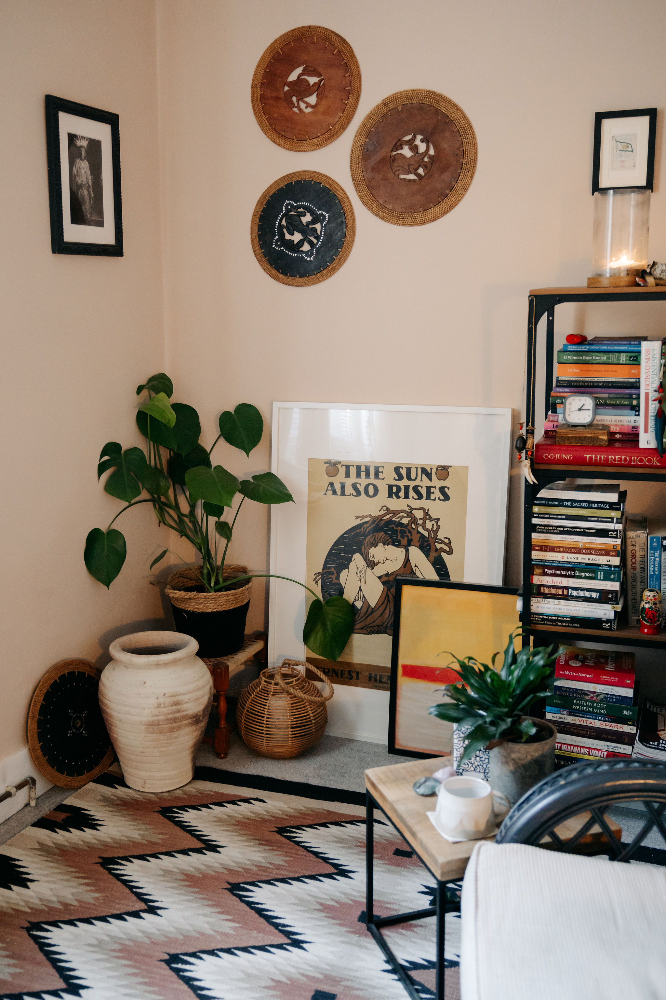
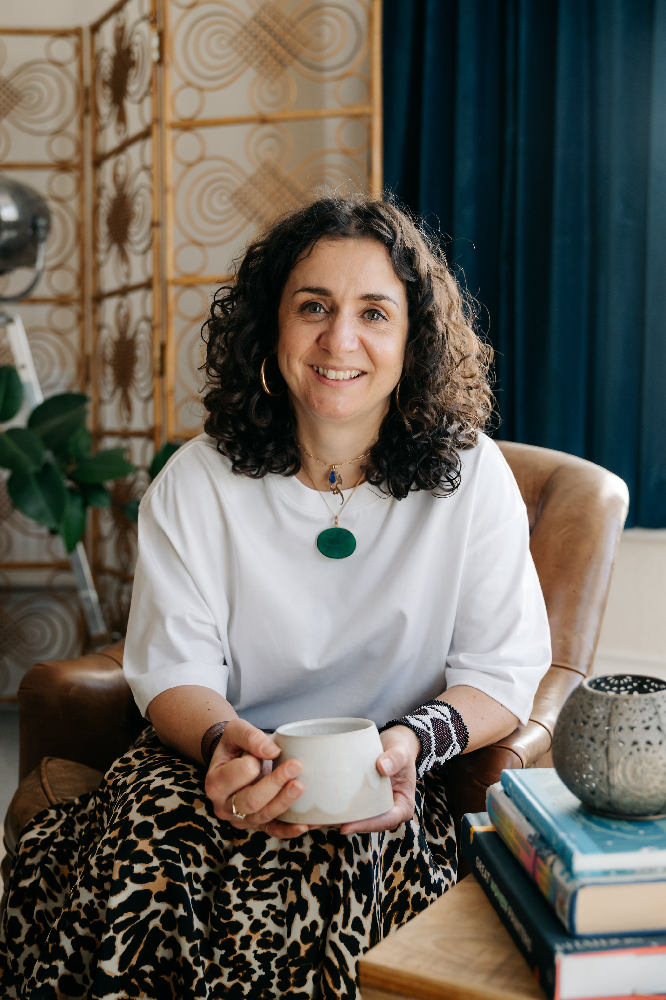
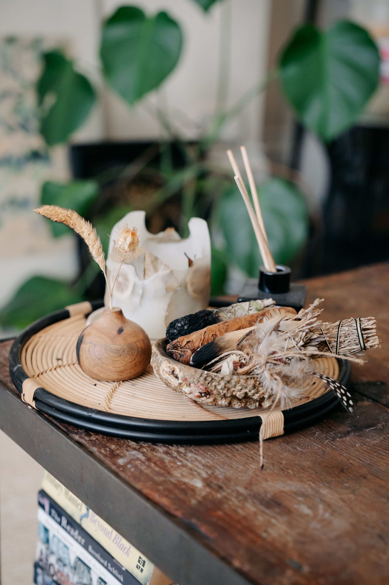

Soraya Chegini-Adams
Psychotherapy
Integrative Psychotherapy and Counselling for Adults | UKCP Registered
London E1 & W2 | Margate | Virtual
In a world that's always on the move, it can feel like we're
just about keeping up. The everyday grind pulls our attention
and it's no surprise we feel disconnected or stuck in a loop.
Life has a way of throwing us around, whilst not being totally
sure where we're headed. We forget ourselves and lose connection
to what's true and important.
I offer sanctuary—a place to pause, exhale and take the weight
off. A space to reset and gather yourself. To sit back and gently untangle what is in front of us and
reclaim your inner compass.
Connecting back to ourselves is essential in uncovering what
truly needs tending to. From here potential can be found, opening up to fresh possibility and a new
direction.
My Approach
As an integrative psychotherapist I have trained in different
approaches such as transpersonal, psychodynamic, humanistic and
existential methods. This allows me to work intuitively and
adapt to meet your unique needs, enabling us to work with
whatever arises.
Transpersonal means that my methods are holistic; bringing the
body, mind and soul in harmony to accomplish healing and growth.
If sometimes language evades us, we can work with creative
expression, dreams and mindfulness to create breakthroughs. This
can mean listening to the body or checking in with the senses
whilst we work, connecting with what is true and authentic.
I believe therapy is relational and I encourage a collaborative
process of careful listening and supportive dialogue. By
creating a secure foundation of trust and safety, we can allow
unconscious patterns and self-limiting beliefs to move into the
light to be witnessed and released. Our work together will help
cultivate an inner guidance for you to take out into your life
and relationships.
Whatever the issue, I aim to walk alongside you to uncover your
concerns, untangle what is stuck and be there to witness and
celebrate your progress.



Specialties and Expertise
- Childhood Trauma
- Domestic Abuse
- PTSD and Complex PTSD
- Identity and Cultural Issues
- Co-dependency and Relationship Issues
- Depression
- Psychedelic Integration
- Mixed and Multi-Heritage Issues
- Low Self-esteem
- Anxiety and Social Anxiety
- Bereavement and Loss
- Corporate Disillusionment and Burnout
- Midlife Transition / Depression
- Spiritual Crisis
About Me
After studying Psychology at Leeds University, I spent 20+ years
in the fashion retail industry, leading large teams in creative
and project management. The corporate world delivered success
but also chronic exhaustion and disillusionment. My path up to
that point had always brought personal struggle and inner
turmoil and I continued to chase answers in the wrong places.
I eventually embarked on a journey of discovery through a blend
of therapy, deep shamanic work, meditation, Buddhist and tantra
practice. These methods have supported me to turn inward and
heal, becoming sacred practices to integrate into my work as a
therapist.
My formal training is in integrative and transpersonal
psychotherapy and counselling; receiving a Post-Graduate diploma
at the Centre of Counselling and Psychotherapy Education (CCPE).
I am an accredited member of the UKCP.
Additionally, I possess specialised training in trauma support,
particularly for individuals who have endured emotional,
physical, or sexual abuse during childhood.


Fees & availability
Session fee is £85 for face to face in all locations and
virtual.
I offer a free initial 20 minute exploratory session. A limited
amount of low cost slots are available.
My location
My in person practice locations include Margate (CT9) and Paddington, London (E1 & W2). For those preferring online therapy, sessions are conducted securely through Zoom.
FAQs
I want to get in touch, so what happens next?
Send me an email and let me know if you are seeking online, or face to face sessions - along with the preferred location. We can then organise a 20-minute introductory Zoom session. This serves as an opportunity for us to explore why you are seeking therapy, how it would be helpful and to gauge if I am a good fit for you.
How long is a typical therapy session, and how often should sessions occur?
Therapy sessions typically last 50 minutes and are ideally scheduled once a week.
How is the progress of therapy reviewed?
We will regularly review the progress of therapy sessions together. It's entirely up to you to decide the number of sessions you feel you need. Therapy can last anywhere from a few weeks to several years based on individual requirements.
Feel free to contact me
To explore more about therapy, inquire about sessions, or schedule a consultation, feel free to reach out via the contact form.